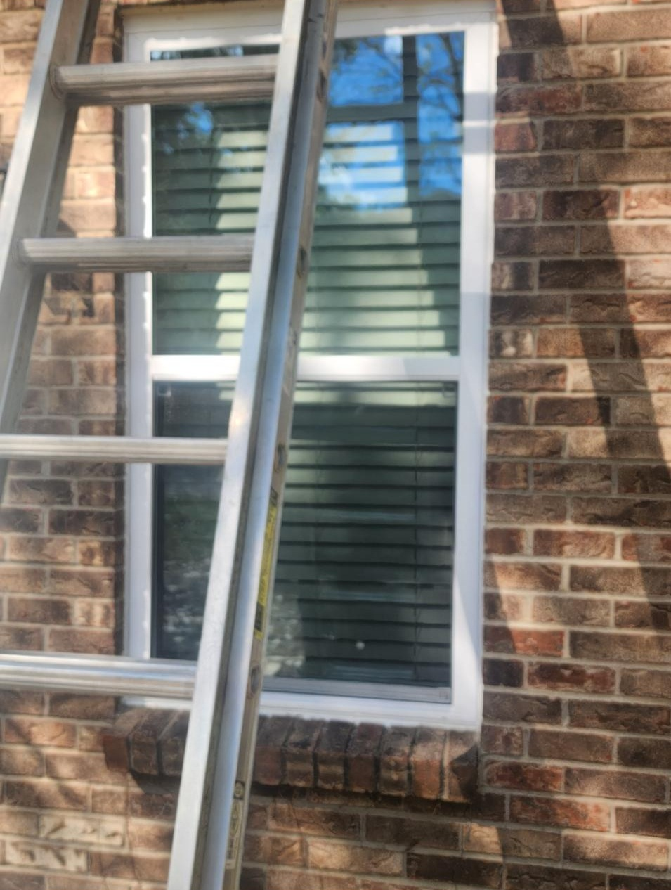
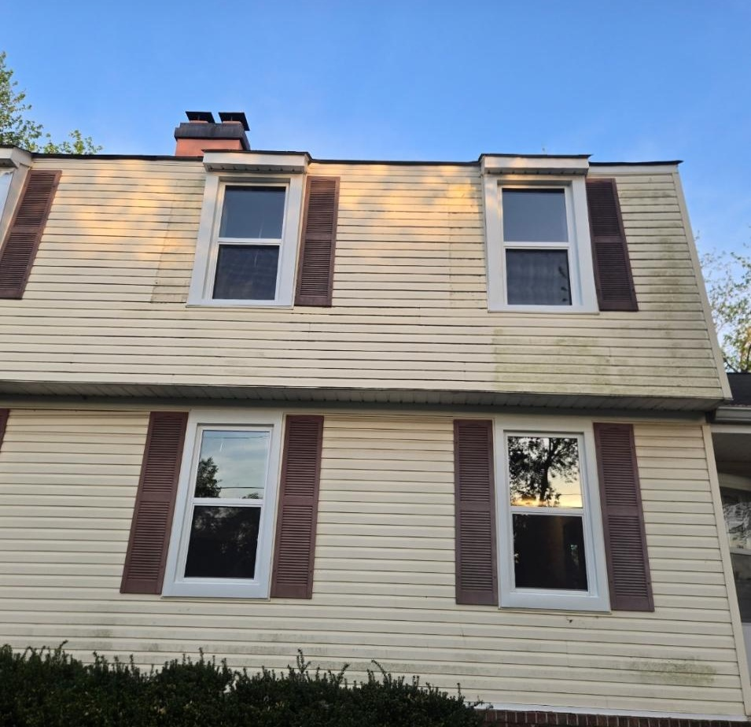
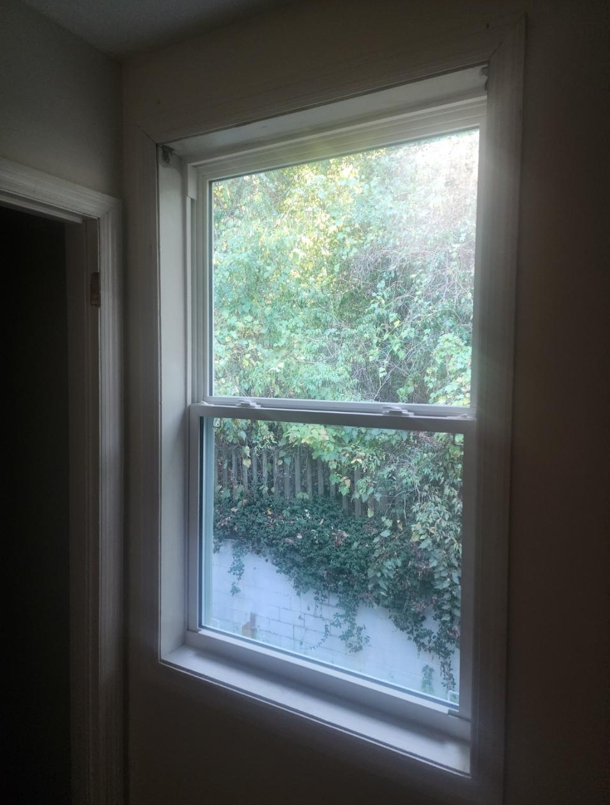

Gallery
Finished Window Project Photos
Before photos are still being collected, so this gallery focuses on completed installations, exterior curb appeal, interior light, clean installation details, and finished windows after cleanup.

Finished Picture Window
Clean exterior trim and updated curb appeal after installation.

Two-Story Window Update
Completed window replacement shown from the exterior.

Double-Hung Window Detail
A close look at the finished frame, glass, and trim work.

Whole-Home Exterior Update
Finished replacement windows across multiple elevations.

Black Frame Finished Product
Modern dark frames installed along a deck-facing wall.

Interior Finished View
A bright, clean interior view after window replacement.
Explore More